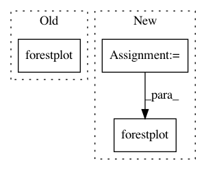

d8f17474a2c42d753e67c907196a964942ee7eff,pymc/tests/test_plots.py,,test_plots,#,5
Before Change
// Test single trace
from pymc.examples import arbitrary_stochastic
forestplot(arbitrary_stochastic.trace)
autocorrplot(arbitrary_stochastic.trace)
After Change
start = model.test_point
h = find_hessian(start)
step = Metropolis(model.vars, h)
trace = sample(3000, step, start)
forestplot(trace)
autocorrplot(trace)
In pattern: SUPERPATTERN
Frequency: 3
Non-data size: 3
Instances
Project Name: pymc-devs/pymc3
Commit Name: d8f17474a2c42d753e67c907196a964942ee7eff
Time: 2013-06-04
Author: chris.fonnesbeck@vanderbilt.edu
File Name: pymc/tests/test_plots.py
Class Name:
Method Name: test_plots
Project Name: arviz-devs/arviz
Commit Name: 4fb00229644a14226db9028e63e8caba9a0158f2
Time: 2018-07-08
Author: ColCarroll@users.noreply.github.com
File Name: examples/forestplot.py
Class Name:
Method Name:
Project Name: pymc-devs/pymc3
Commit Name: 6afadb6c2c00c2aa3190a64cb6865c17d9a182f5
Time: 2013-06-04
Author: chris.fonnesbeck@vanderbilt.edu
File Name: pymc/tests/test_plots.py
Class Name:
Method Name: test_plots